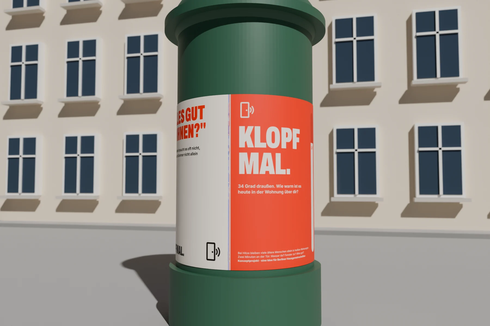
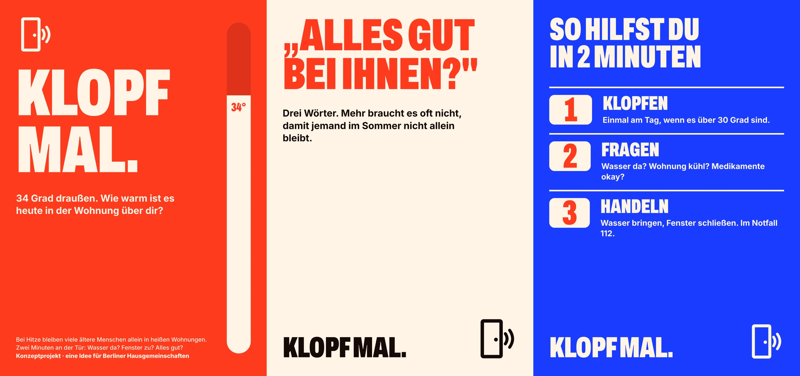
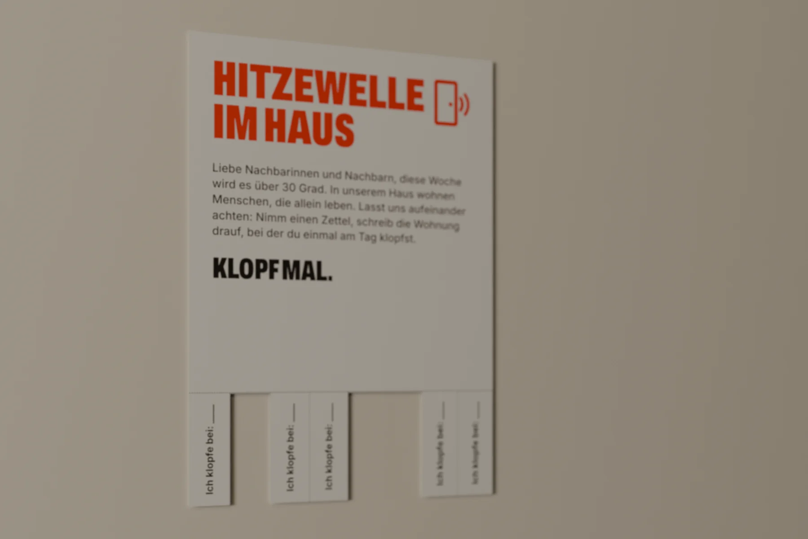
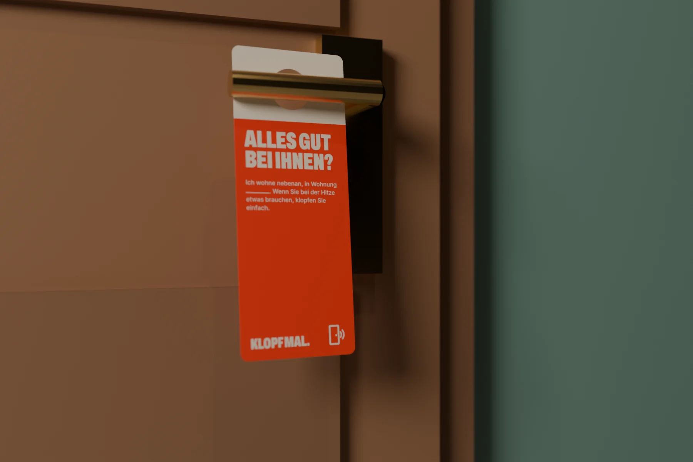
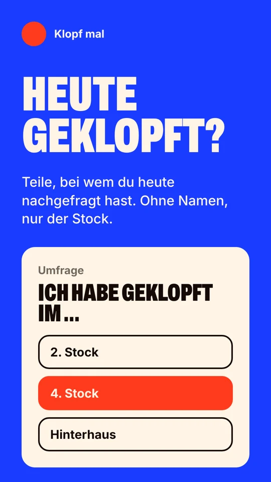
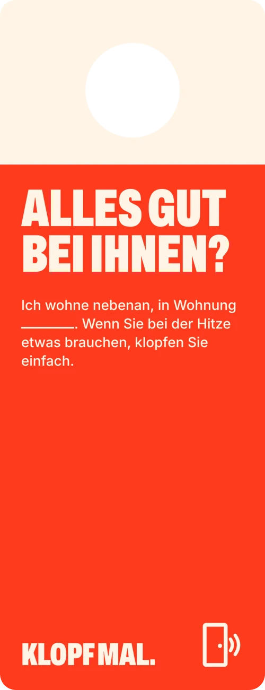

Klopf mal.
A concept campaign for Berlin summers: during a heatwave, knock on the door of an older neighbour who lives alone and ask if everything is okay. It turns a public health message into one small, concrete action that anyone in the building can do today.

Heat advice is everywhere. Action is not.
Most heat campaigns tell people what to do for themselves: drink water, stay inside, close the curtains. The people most at risk are often older and living alone, and they are least likely to see a poster or a post. I asked a different question: who is already close to them every day? Their neighbours.
One action
Not a list of ten tips. One thing to do: knock and ask.
In the building
The campaign has to reach the stairwell and the front door, not only the street.
No stigma
Nobody wants to be "the vulnerable one". The tone is neighbourly, not medical.
From the street to the door in four steps
The campaign follows the path a message has to travel: public space creates awareness, the building turns it into a plan, the door turns it into contact.
Billboards and columns ask a personal question: how hot is it upstairs?
Stories make knocking visible and a little social: "Heute geklopft?"
A notice with tear-off tabs: each neighbour takes one flat to check on.
A door hanger for when nobody answers, with a way to reach the neighbour.
Heat red, cool blue, a loud condensed voice
awareness
how to help
warm, friendly
text
Archivo Black, condensed. Big enough to read from a tram, narrow enough to fit long German words.
Inter Bold for body copy. Sentences are short and use the polite "Sie" on the door, the friendly "du" on the street.
The knock symbol
A door and two sound waves. It works without words, so it also speaks to neighbours who do not read German well.

Poster setRed asks the question, cream gives the words to say, blue explains the three steps.
Where the message lives

Billboard on a firewallA name and a floor make the question personal. You look up at the building, and think of your own.

Stairwell noticeEach tab says "Ich klopfe bei: ___". Missing tabs show others are already helping.

Door hangerFor when nobody opens. It says who knocked and where they live, so the neighbour can knock back.


Social and print, one voice
The story asks for the floor, never the name, so sharing stays private. The door hanger has a blank line for the flat number, so it works in any building.
What I would test next
- Talk to older residents: does a knock feel caring or intrusive? Adjust the copy.
- Test the tear-off notice in two buildings and see if tabs actually get taken.
- Translate the door hanger into Turkish, Arabic and Russian, the knock symbol stays.
- Partner with housing associations to put notices in stairwells before the first heatwave.